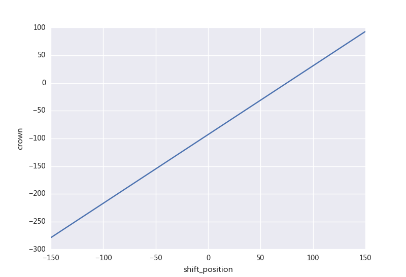

CVC辊形设计原理¶

本文主要介绍CVC辊形的基本原理。
CVC是Continuously Variable Crown的缩写，中文意思为连续可变凸度。CVC的辊形，从轧辊上看像是上下对称布置的花瓶。正是这种辊形使得轧辊在轴向窜动的过程中获得改变凸度的能力。
CVC
bucudwdwdwdwdwdwdwdwdwo
CVC的曲线函数一般是一个最高次项为奇数的多项式。如下式所示。其中和分别表示上辊和下辊的辊形曲线。到为多项式系数，或称为辊形系数。为曲线的最高次幂，为辊身长度，为窜辊值。 $$ y_{u}(x)= \sum_{i = 0} ^{n} a_{i} (x-s)^{i} $$
辊形曲线的建立¶
目前三次曲线用的比较多，下面以三次曲线举例，上辊的辊形曲线如下。 $$ y_{u0}(x) = a_{0} + a_{1} x ^{1} + a_{2} x^{2} + a_{3} x^{3} $$ 同时也可以确认下辊的辊形曲线。其中为工作辊辊身长度的一半。 $$ y_{b0}(x) = a_{0} + a_{1}(2L-x) ^{1}+a_{2}(2L-x) ^{2}+a_{3}(2L-x) ^{3} $$ 若考虑窜辊，则上下辊的辊形曲线需要稍做修改。考虑窜辊的上辊辊形曲线如下。 $$ y_{u1}(x) = a_{0} +a_{1}(x-s) ^{1}+a_{2}(x-s) ^{2}+a_{3}(x-s) ^{3} $$ 考虑窜辊的下辊辊形曲线如下。 $$ y_{b1}(x) = a_{0} +a_{1} (2L-x-s)^{1} + a_{2}(2L-x-s)^{2} + a_{3}(2L-x-s)^{3} $$ 以上是围绕辊形实际形状几何条件建立的曲线方程。
轧辊等效凸度和窜辊的关系¶
辊形曲线已知，那么在辊身长度方向上的辊缝大小可以通过如下公式获得。其中为两辊径之间的距离。 $$ g(x)= D-y_{u1}(x) -y_{b1}(x) $$
$$ g(x)= 2(2a_{3}(s-L)-a_{2})(x-L)^{2} + 2(a_{3}(s-L)^{3} - a_{2}(s-L)^{2} +a_{1}(s-L)-a_{0})+D $$ 整个CVC轧辊形成的辊缝等效凸度可以用如下公式表示。 $$ C_{w} = -(g(L)-g(0))=g(0)-g(L) $$ $$ C_{w}=6a_{3}L^2s - (6a_{3}L+2a_{2})L^{2} $$ 可以看出辊缝凸度和窜辊之间满足线性关系 。其中: $$ m = 6 a_{3}L^2 $$ $$ n=(6a_{3}L+2a_{2}) L^{2} $$ 并且和 只与、相关。在实际生产过程中，通过调整窜辊位置就可以线性地调节凸度。

辊形参数的设计¶
在设计CVC辊形时，窜辊行程和设备有关，一般为，所以主要的设计手段是调整辊缝凸度的最大值和最小值。
当辊缝凸度控制范围，窜辊行程范围已知时，将相应凸度极值和窜辊极值代入的公式解二元一次方程，可以获得、的解。 $$ a_{2}=-\frac{C_{min}}{2L^{2}}+3a_3(S_{min}-L) $$ $$ a_{3}= \frac{C_{min}-C_{max}}{6L^{2}(S_{min}-S_{max})} $$
由于和板形无关，确定的值有很多种设计思路，比如两端辊径差最小、中部辊径差最小、轴向力最小等。 以轴向力最小的设计思路为例。在轧辊设计的过程中考虑轧辊轴向力的边界条件。轧辊轴向力的计算如下： $$ F=\int_{y_{u1}(L-b)}^{y_{u1}(L+b)}pdy = p(y_{u1}(L+b)-y_{u1}(L-b)) $$ 和结合对应公式代入后，取轴向力为0，则可以获得的表达式。 $$ a_{1}= - 2 a_{2} L-3 a_{3} L^{2}- a_{3} b^{2} $$ 其中为带钢宽度中心距离宽度边部的长度。将相应、的值代入求得的值。当以轧辊轴线作为横坐标轴时，实际上就为轧辊的名义半径或中心半径。中存在带钢宽度影响项，宽度值的选取采用经验公式，一般取辊身长度的65%。